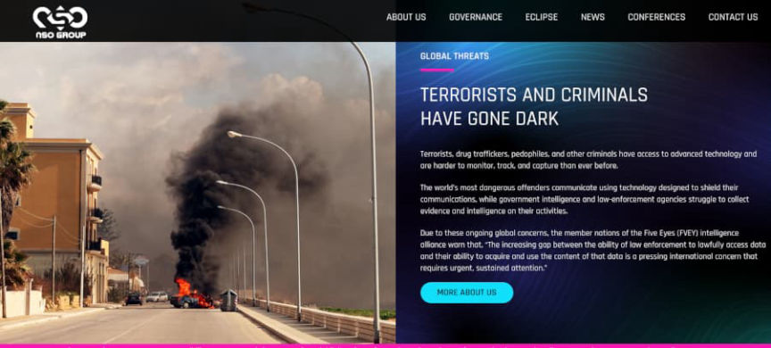
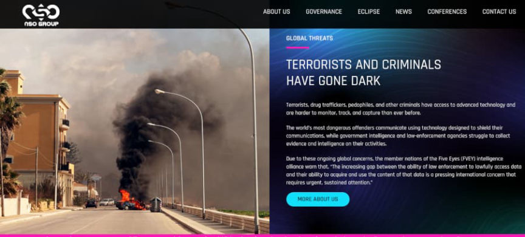

FBI Admits Purchasing NSO Group's Pegasus Spyware
~3 min read | Published on 2022-02-04, tagged General-News using 672 words.
The FBI purchased the NSO Group’s Pegasus spyware but only for “testing and evaluation,” they claimed.
The Federal Bureau of Investigation confirmed to The Guardian that the Bureau had purchased a license to access Pegasus for “product testing and evaluation only.” NSO Group, an Israeli firm, sells spyware and hacking tools to “government intelligence and law enforcement agencies” across the globe. The company’s products are “classified as a military export by Israel.” Pegasus is “one of the world’s most sophisticated hacking tools.” Per Wikipedia:
Pegasus is compatible with iPhone and Android devices. It can be deployed remotely. Once deployed, the client can access the target phone’s data and sensors, including location data, texts, emails, social media messages, files, camera, and microphone. The client-facing side of the tool is user-friendly, and all that may be required (depending upon the case) of the client to begin deployment of Pegasus is to enter the target’s phone number into the tool.

The FBI told The Guardian that the Bureau “works diligently to stay abreast of emerging technologies and tradecraft – not just to explore a potential legal use but also to combat crime and to protect both the American people and our civil liberties.” The FBI is well known for respecting civil liberties! Furthermore, the FBI only wanted to test Pegasus for evaluation purposes. “That means we routinely identify, evaluate, and test technical solutions and problems for a variety of reasons, including possible operational and security concerns they might pose in the wrong hands. There was no operational use in support of any investigation; the FBI procured a limited license for product testing and evaluation only,” an FBI employee said in response to a question from a Guardian journalist.
NYTimes:
“it had helped Mexican authorities capture Joaquín Guzmán Loera, the drug lord known as El Chapo. European investigators have quietly used Pegasus to thwart terrorist plots, fight organized crime, and, in one case, take down a global child-abuse ring, identifying dozens of suspects in more than 40 countries. In a broader sense, NSO’s products seemed to solve one of the biggest problems facing law enforcement and intelligence agencies in the 21st century: that criminals and terrorists had better technology for encrypting their communications than investigators had to decrypt them. The criminal world had gone dark even as it was increasingly going global.”
Intelligence agencies in Saudi Arabia allegedly used Pegasus to spy on the millionaire Washington Post columnist Jamal Khashoggi. If one searches the web for information about Pegasus, they will find many news outlets outraged about its use by “autocratic governments.” I do not think any intelligence agency or law enforcement agency will limit the use of Pegasus to drug lords such as El Chapo or “global child-abuse rings.”
In 2021, Apple filed a complaint against NSO Group concerning the “zero-click” iOS exploit known as “FORCEDENTRY.”
The exploit uses PDF files disguised as GIF files to inject JBIG2-encoded data to provoke an integer overflow in Apple’s CoreGraphics system, circumventing Apple’s “BlastDoor” sandbox for message content, introduced in iOS 14 to defend against KISMET, another zero-click exploit. The FORCEDENTRY exploit has been given the CVE identifier CVE-2021-30860.

CVE-2021-30860’s description: “An integer overflow was addressed with improved input validation. This issue is fixed in Security Update 2021-005 Catalina, iOS 14.8 and iPadOS 14.8, macOS Big Sur 11.6, watchOS 7.6.2. Processing a maliciously crafted PDF may lead to arbitrary code execution. Apple is aware of a report that this issue may have been actively exploited.
NSO Group has an extensive background when it comes to mobile device intrusion. The ForcedEntry exploit followed a different iMessage exploit from the company identified as “Kismet.”
Keep in mind, “private companies” are partnering with the three letter agencies to spy on you. With telecom companies providing the NSA with “copies of internet traffic,” these agencies hardly have a need to deploy Pegasus when collecting intel on their own citizens.
archive.is, archive.org, archiveiya74codqgiixo33q62qlrqtkgmcitqx5u2oeqnmn5bpcbiyd.onion
Apple vs. NSO GROUP TECHNOLOGIES LIMITED (pdf)
The Federal Bureau of Investigation confirmed to The Guardian that the Bureau had purchased a license to access Pegasus for “product testing and evaluation only.” NSO Group, an Israeli firm, sells spyware and hacking tools to “government intelligence and law enforcement agencies” across the globe. The company’s products are “classified as a military export by Israel.” Pegasus is “one of the world’s most sophisticated hacking tools.” Per Wikipedia:
Pegasus is compatible with iPhone and Android devices. It can be deployed remotely. Once deployed, the client can access the target phone’s data and sensors, including location data, texts, emails, social media messages, files, camera, and microphone. The client-facing side of the tool is user-friendly, and all that may be required (depending upon the case) of the client to begin deployment of Pegasus is to enter the target’s phone number into the tool.

The NSO Group is one of the good guys
The FBI told The Guardian that the Bureau “works diligently to stay abreast of emerging technologies and tradecraft – not just to explore a potential legal use but also to combat crime and to protect both the American people and our civil liberties.” The FBI is well known for respecting civil liberties! Furthermore, the FBI only wanted to test Pegasus for evaluation purposes. “That means we routinely identify, evaluate, and test technical solutions and problems for a variety of reasons, including possible operational and security concerns they might pose in the wrong hands. There was no operational use in support of any investigation; the FBI procured a limited license for product testing and evaluation only,” an FBI employee said in response to a question from a Guardian journalist.
NYTimes:
“it had helped Mexican authorities capture Joaquín Guzmán Loera, the drug lord known as El Chapo. European investigators have quietly used Pegasus to thwart terrorist plots, fight organized crime, and, in one case, take down a global child-abuse ring, identifying dozens of suspects in more than 40 countries. In a broader sense, NSO’s products seemed to solve one of the biggest problems facing law enforcement and intelligence agencies in the 21st century: that criminals and terrorists had better technology for encrypting their communications than investigators had to decrypt them. The criminal world had gone dark even as it was increasingly going global.”
Intelligence agencies in Saudi Arabia allegedly used Pegasus to spy on the millionaire Washington Post columnist Jamal Khashoggi. If one searches the web for information about Pegasus, they will find many news outlets outraged about its use by “autocratic governments.” I do not think any intelligence agency or law enforcement agency will limit the use of Pegasus to drug lords such as El Chapo or “global child-abuse rings.”
In 2021, Apple filed a complaint against NSO Group concerning the “zero-click” iOS exploit known as “FORCEDENTRY.”
The exploit uses PDF files disguised as GIF files to inject JBIG2-encoded data to provoke an integer overflow in Apple’s CoreGraphics system, circumventing Apple’s “BlastDoor” sandbox for message content, introduced in iOS 14 to defend against KISMET, another zero-click exploit. The FORCEDENTRY exploit has been given the CVE identifier CVE-2021-30860.
A Symbolicated Type One crash for FORCEDENTRY on an iPhone 12 Pro Max running iOS 14.6. | Citizen Lab
CVE-2021-30860’s description: “An integer overflow was addressed with improved input validation. This issue is fixed in Security Update 2021-005 Catalina, iOS 14.8 and iPadOS 14.8, macOS Big Sur 11.6, watchOS 7.6.2. Processing a maliciously crafted PDF may lead to arbitrary code execution. Apple is aware of a report that this issue may have been actively exploited.
NSO Group has an extensive background when it comes to mobile device intrusion. The ForcedEntry exploit followed a different iMessage exploit from the company identified as “Kismet.”
Keep in mind, “private companies” are partnering with the three letter agencies to spy on you. With telecom companies providing the NSA with “copies of internet traffic,” these agencies hardly have a need to deploy Pegasus when collecting intel on their own citizens.
archive.is, archive.org, archiveiya74codqgiixo33q62qlrqtkgmcitqx5u2oeqnmn5bpcbiyd.onion
Apple vs. NSO GROUP TECHNOLOGIES LIMITED (pdf)